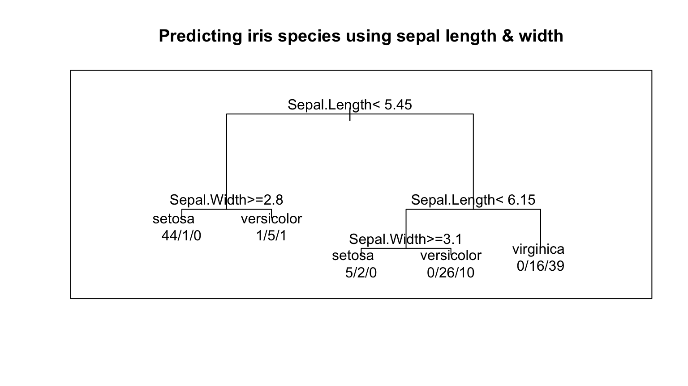
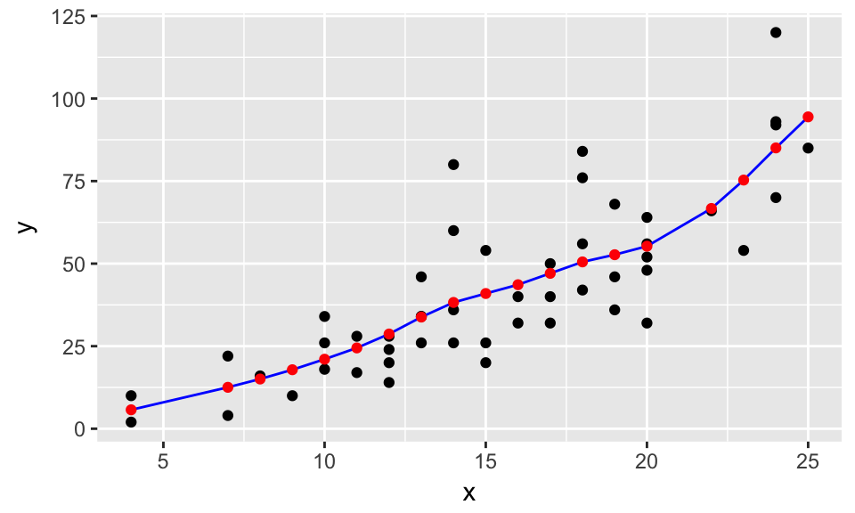

STAT/MATH 495: Advanced Data Analysis
Albert Y. Kim
Last updated on 2017-09-14
The lectures are numbered according to the following rough topic outline below. A detailed topic schedule and corresponding readings can be found here.
- Background
Intro to modelingDone- Simple case with univariate predictors to start: splines
- Out-of-sample prediction, sampling/resampling, crossvalidation
- Bias-variance tradeoff
- Continuous outcomes I
- LOESS smoother
- Regression for prediction
- Categorical outcomes i.e. classification
- Logistic regression for prediction + ROC curves
- k-Nearest Neighbors
- Classification and regression trees (CART)
- Continuous outcome II
- Regularization/shrinkage methods: Ridge regression and LASSO
- Other methods
- Boosting and bagging
- Random forests
- Neural nets
- Unsupervised learning (time permitting)
- Principal components analysis
- k-Means Clustering
1.5 The theory of splines
Thu 9/14
Announcements:
- “Gah! I can’t tell who you are from your Slack names!” Please go to: “STAT 495 Amherst…” on top left of Slack -> “Profile & account” -> “Edit Profile” and
- Change “Display name” to your first name
- Add a photo
- Andrew K. (TA) gave feedback on PS01 and will do so for every problem set by Tuesday evening.
- You should’ve received an email.
- Best viewed in the GitHub webpage GUI in split diff mode.
- Overall comments:
View()doesn’t work in an.Rmdfile; do not include these.- Don’t comment for your own sake, but rather comment to be empathetic to your collaborators. In particular your most important collaborator.
- The tone of your interactions matters, especially in an open source setting. This take practice.
Splines
Splines are piecewise continuous polynomials with smoothness constraints:

Chalk talk
1.5 Splines
How are splines curves fit?
How to obtain the fitted \(\widehat{\beta}_0\), \(\widehat{\beta}_1\), \(\widehat{\beta}_2\), and \(\widehat{\beta}_3\) necessary for all \(K+1\) cubic polynomials \[ \widehat{y}_i = \widehat{\beta}_0 + \widehat{\beta}_1 x_i + \widehat{\beta}_2 x_i^2 + \widehat{\beta}_3 x_i^3 \]
for each interval?
A combination of calculus (derivatives) and linear algebra (solving a system of equations). See this PDF if you’re curious.
Problem set 2

You will enter the Sberbank Russian Housing Market Kaggle competition and fit a spline model to predict the outcome variable price_doc: the sale price of a piece of real estate. The data has been pre-downloaded and included in the PS02 repo in the course GitHub Organization.
- Assigned: Tue 9/12
- Due: Tue 9/19 9:00am, at which point there will be synchronized pull requests.
- Teams: 2-3 people at your choosing. Once you’ve selected your group designate one person as team leader, who will:
- Create a Slack DM that includes Albert, Andrew Kim (TA), and all team members. So far:
- Team A: Sara (no “h”), Meredith, Brenna
- Team B: Jeff, Luke, Andrew
- Team C: Jonathan, Sarah (with “h”), Timothy
- Team D: Pei, Jenn, Anthony
- Team E: Leonard, Vickie, Brendan
- Submit a single pull request on behalf of the group.
- Submit a single submission to Kaggle on behalf of the group.
- Create a Slack DM that includes Albert, Andrew Kim (TA), and all team members. So far:
- Deliverables: One ready to submit pull request to the PS02 repo (recall the GitHub submission process). At the very least, the following files should be modified/added:
PS02.Rmd: This should- Be well-commented and completely reproducible.
- Involve an exploratory data analysis.
- Argue why you chose the model you did.
PS02.html: The output ofPS02.Rmd. This will be the presentation file for a randomly chosen set of groups on Tue 9/19.README.md: Changerudeboybertin the URL to the GitHub ID of the team leader so that you can open your team’s version ofPS02.htmlin a browser on Tuesday morning.submission.csvscreen_shot.pngorscreen_shot.jpg: A screenshot of your Kaggle ranking.
- Tips:
- Again, do not worry about your score. This problem set is more about process more than outcome.
- Do not spin your wheels!
- Hints:
library(tidyverse)
library(broom)
data(cars)
splines_model <- smooth.spline(x=cars$speed, y=cars$dist, df = 6)
splines_model_tidy <- splines_model %>%
broom::augment()
plot <- ggplot(splines_model_tidy, aes(x=x)) +
geom_point(aes(y=y)) +
geom_line(aes(y=.fitted), col="blue")
plot
new_speeds <- c(24.6, 26.4, 23.4, 16.8, 15.8, 5.4, 14.8, 8.2, 1, 18.8, 25, 28, 19.6, 11.2, 21.8, 26.2, 20.6, 0, 14.4, 8.8)
# What do you think output is?
output <- predict(splines_model, new_data = new_speeds) %>%
tibble::as.tibble()
head(output)| x | y |
|---|---|
| 4 | 5.731162 |
| 7 | 12.541225 |
| 8 | 15.054925 |
| 9 | 17.863747 |
| 10 | 21.053253 |
| 11 | 24.469082 |
plot +
geom_point(data=output, aes(x=x, y=y), col="red")
1.4 Intro to splines
Tue 9/12
Announcements: New office hours location: Seeley Mudd 208 (lounge)
Chalk talk
- Analogy of what we are doing
Splines
Splines are piecewise cubic polynomials with smoothness constraints. The code corresponding to the video at the end of Lecture 1.3 is below. (If you’re curious, the code that created multiple_df, exercise, fitted, and truth are available on lines 1-86 of https://bit.ly/rudeboybert_splines; these were run behind the scences to keep the code below simple.)
library(tidyverse)
library(broom)
# Load some pre-computed data
load(url("https://rudeboybert.github.io/STAT495/static/splines.RData"))
# Here is a wacky function f(x)
f <- function(x){
f_x <- 0.2*x^11*(10*(1-x))^6+10*(10*x)^3*(1-x)^10
return(f_x)
}
# For 500 equally spaced values of x between 0 & 1, let's compute and plot f(x) in red.
# Recall that f(x) is the systematic component, or "the signal"
values <- data_frame(
x = seq(from=0, to=1, length=500),
f_x = f(x)
)
values %>%
ggplot(aes(x=x)) +
stat_function(fun = f, col="red", size=1)
# We now add the unsystematic error component epsilon to f(x) i.e. the noise, to
# obtain our y's, and hence our observed points in black (x, y)
values <- values %>%
mutate(
epsilon = rnorm(500, 0, sd = 2),
y = f_x + epsilon
)
values %>%
ggplot(aes(x=x)) +
stat_function(fun = f, col="red", size=1) +
geom_point(aes(y=y))
# But remember in real life, we won't know the red curve! If we did, then why
# are we doing any of this? All we observe are the black points. Let's "pretend"
# like we don't know what the red curve is!
values %>%
ggplot(aes(x=x)) +
geom_point(aes(y=y))
# We now fit a 'smoothing spline'. Think of it as a piece of string with a
# specified amount of flexibility, where the flexibility is controlled by the
# "degrees of freedom" df. This blue curve is a "guess/estimate" of the red
# curve f(x), which recall, we are pretending we don't know. Also observe how we
# use the broom::augment() function to convert the output of smooth.spline to
# tidy data frame format.
smooth.spline(values$x, values$y, df=5) %>%
broom::augment() %>%
ggplot(aes(x=x)) +
geom_point(aes(y=y)) +
geom_line(aes(y=.fitted), col="blue", size=1)
# Play around with the df argument in smooth.spline() above.
# Now let's compare smoothing splines using four different values of the degrees
# of freedom in a plot I precomputed. Which do you think is best?
multiple_df
# I would say that df=10 roughly is best. df=2 is not quite flexible enough,
# where as df=50 seems to no longer fitting to signal (the true function f) and
# is now fitting to noise. In other words, it is overfitting to this particular
# data set.
multiple_df +
stat_function(fun = f, col="red", size=1)
# Exercise. Here are a set of points from a different f(x) and epsilon. With
# your finger trace what you think the true f(x) function looks like. In other
# words, separate the signal from the noise!"
exercise
# Let's fit a spline with 25 degrees of freedom. How close is this to the truth?
fitted
# Ready? Here is the truth! How close were you? Note the noise is normal with mean 0
# and sd = 12!
truth1.3 Intro to modeling
Mon 9/11
Announcements:
- Math/stat table for lunch 12-1:30 Terrace Room A, Valentine
- Syllabus has been finalized, so please read it:
- Midterm dates
- Andrew’s tutoring hours: Mondays 6pm-8pm in Seeley Mudd 205 starting today
- All problem sets assigned/due/presented on Tuesdays
- Perform pull request for PS01 as a class
- For tomorrow, watch 9m49s video linked below.
Topics:
- Supervised vs unsupervised learning
- Modeling for supervised learning
- (If time) Sampling and resampling
Chalk talk
- 1.3 Supervised vs unsupervised
Example of unsupervised learning
Colin Woodard’s idea of 11 Nations of North America:

Chalk talk
- 1.3 Model for supervised learning
POTUS 45 on models
Teaching my students to separate systematic model component from irreducible error component when fitting for outcome variable pic.twitter.com/7jzuqEHTdp
— Albert Y. Kim (@rudeboybert) February 22, 2017
Chalk talk
- 1.3 Income example
- 1.3 Most common example in Amherst stats courses
Next steps
- Early on we keep things simple: univariate \(\vec{x}\) so that we visualize easily
- For tomorrow (Tuesday), watch the following 9m49s video:
Problem set 1

Baby’s first Kaggle competition and GitHub pull request! Specifically the Titanic: Machine Learning from Disaster competition. You will be submitting predictions on who survived/died amongst the passengers randomly assigned to the test set and viewing your Kaggle leaderboard score.
- Assigned: Thu 9/7
- Due: Mon 9/11 9:00am
- Teams: Individual
- Deliverables: A ready to submit pull request to the PS01 repo, in other words complete only steps 1-5 of the problem set submission process. However, you will all be submitting/making the pull request (step 6) at the same time as a group in lecture. The following files should be modified/added from the original
PS01.Rmd: This should be well-commented and completely reproducible. In other words, if someone else takes this repo, they should be able to reproduce your work with one click of the mouse. This necessitates taking an empathetic view of other users.PS01.html: The output ofPS01.Rmdsubmission.csv: Your predictions of who survives based on something other than sex. Current set to matchgender_submissions.csvon Kaggle.screen_shot.pngorscreen_shot.jpg: A screenshot of your Kaggle ranking. Be sure to “clean” your browsers.- Any other necessary files.
- Tips:
- This problem set is only about getting used to the process, not about anything substantive.
- You don’t have to fit actual model for now, but feel free to if you want. Don’t even worry about how good your predictions are, just focus on getting a score.
- Do not spin your wheels! If you are stuck, take a breather, and consult others.
- Note added 9/7 1:30pm: There is an error in
PS01.Rmd; replace line 4 ofPS01.Rmdso that it reads:
date: "2017-09-07"1.2 Getting used to infrastructure
Thu 9/7
Announcements:
- Refresher on Slack notifications
- GitHub organization for the course: Where problem sets will be distributed/submitted
- Ensure you can access the GitHub organization by clicking “GitHub Org” above.
- If BOTH your full name and/or a recent picture are not visible here, please update your GitHub profile.
Topics:
- GitHub pull request theory
- Kaggle competition
GitHub pull request theory
- Open the following in two separate tabs
- Chalk talk: 1.2 GitHub pull requests
Kaggle data
- Run the code block below to load/inspect the Titanic data from Kaggle (which I’ve uploaded to the course webpage)
- Chalk talk: 1.2 Kaggle data
library(tidyverse)
train <- read_csv("https://rudeboybert.github.io/STAT495/static/Titanic/train.csv")
test <- read_csv("https://rudeboybert.github.io/STAT495/static/Titanic/test.csv")
submission <- read_csv("https://rudeboybert.github.io/STAT495/static/Titanic/gender_submission.csv")
glimpse(train)
glimpse(test)
glimpse(submission)
View(train)
View(test)
View(submission)Who is predicted to survive?
The predictions are based on the sex of the passengers.
test %>%
left_join(submission, by="PassengerId") %>%
select(PassengerId, Sex, Survived)Tech time
- Questions:
- What is the “scoring” mechanism for this Kaggle competition?
- What score does the above “model” yield for the
training data?
- Start problem set 1
Problem set 0
- Assigned: Tue 9/5
- Due: Thu 9/7 lecture time.
- Set up Git/GitHub to interface with RStudio on your computer by reading and following along to Chapters 1-15 of “Happy Git and GitHub for the useR”
- If you start spinning your wheels, don’t panic! I’ll have office hours on Thursday 2-5pm to help out if you are stuck.
1.1 Syllabus and background
Tue 9/5
- Albert’s background
- Go over syllabus
- Setting up infrastructure
- Intro to Slack
- Intro to Kaggle
- Intro to GitHub
Your instructor
What is machine learning?

My philosophy
- Question What is the difference between statistics, data science, and machine learning?
- Answer Ben Baumer at Smith posed: “Instead of obsessing over Venn diagrams of what topics are within the domains of which disciplines, I ask instead”: What if we blew up math, stats, CS, and all their legacies and started over? What would this field look like/be called?"
Definitions
- Arthur Samuel (1959): Machine learning is the subfield of computer science that gives computers the ability to learn without being explicitly programmed.
- Albert Y. Kim (2017): Prediction. Examples:
- Self-Driving Vehicles
- Netflix recommendations
- Simple linear regression for prediction and not for explanation
Syllabus
Syllabus discussion.
Toolbox: tidyverse

Setting up infrastructure
- Intro to Slack
- Intro to Kaggle
- Intro to GitHub
Intro to Slack
- Slack is a medium for communication that has many pros (and some cons)
- I require you to use Slack via the Desktop App
- Student feedback
Tech time
- Make sure you’ve completed the intro survey
- Install the Slack Desktop App
- GitHub
- If you don’t have a GitHub.com account already, create one.
- Update your name and post a recent profile picture.
- Take a break
Slack
- Chalk talk: 1.1 Slack
- Exercise:
- Send me your GitHub login via direct message (DM)
- Practice sending group DM with seatmates
- Key for Slack success: Setting notifications
Intro to Kaggle
- Baby’s first Kaggle competition: Titanic
- Chalk talk: 1.1 Kaggle
Intro to GitHub
- My GitHub profile:
rudeboybert - Example:
ggplot2source code